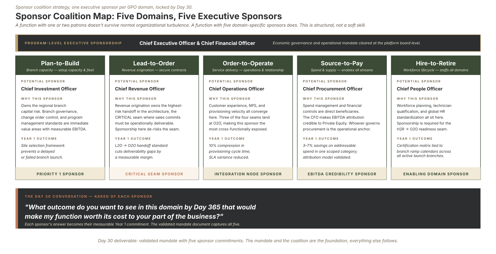

In 2024, customers checking a public Verizon page for outages affecting their service could leave a comment, and thousands did. Nobody read them. The angriest of those customers were among the likeliest to leave, and the retention team whose job was to call at-risk customers had no way to find them in the stream. I identified those comments as a churn signal and specified the sentiment model that ranked them. In a controlled pilot, the retention team contacted the thirty angriest commenters each day, and churn in that cohort fell 60%.
What the business needed to know was already written down by its own customers. That is where I'd start a new function too.
If I were hired to build a Process Excellence function, I'd arrive with a point of view, a track record, and a board that wants to see motion. The instinct, on Day 1, is to bring a plan and start executing it. I'd resist that instinct and spend the first thirty days earning the right to build, and that begins with one question.
Mandate
The question that governs everything
Before I drew a single process map, I'd need an answer to this: what problem is this company hiring this function to solve?
The question sounds obvious, but the answer usually isn't. At our composite company, Meridian Field Services (a PE-backed platform rolling up regional commercial mechanical-services firms), the surface answer is "standardize our processes." Underneath that phrase there are usually two or three forces at once, and they don't pull in the same direction:
- A scaling problem. The operating model that worked at six locations is being stress-tested at thirty. Handoffs that used to happen in a hallway now cross time zones and acquired-company boundaries.
- A financial-discipline problem. The sponsor needs operational performance that is visible, measurable and improving, with one story across every branch.
- An organizational-moment problem. New leadership wants to put its own fingerprint on how the company runs, instead of inheriting the methods of the chapter before.
All three can be true, but which one is most urgent reorders everything downstream: what to build first, who to hire, how hard to push. If I diagnosed the wrong primary driver, I'd build a good answer to a problem nobody was losing sleep over.
Methodology
Write your plan as hypotheses
I'd treat my own plan as a set of hypotheses to validate. Every assumption goes on paper, labeled by confidence, with a note on what changes if I'm wrong. For Meridian, a few of mine would look like this:
- This function is greenfield. (Confidence: medium. If informal process owners already exist, my first month becomes alignment before architecture.)
- The company wants enterprise standardization. (Confidence: medium. If it values local autonomy more than it admits, my governance model has to be lighter and more advisory.)
- Not all five domains are equally urgent. (Confidence: medium. If urgency is evenly spread, I need a domain diagnostic before I commit anyone's time.)
There's a leadership reason to work this way as well as an analytical one. A leader who writes down their assumptions and labels their confidence earns trust, and a leader who asserts certainty about things they cannot yet know loses it, usually when it matters most. Saying "here's what I believe, and here's how I'll find out if I'm wrong" is what makes the eventual plan credible.
Discipline
The first thirty days are for listening
I'd spend the first month on a listening tour, one-on-one with the leaders who own the work, to understand their plans before presenting mine.
The questions are about them: Where does process inconsistency cost you today? What does "good" look like from your seat? Where have you been burned before by someone who arrived with a framework and left with a slide deck? At Meridian, I'd expect to learn more from how a branch manager describes a dropped handoff than from any process document, the same way the outage comments told the retention team who was about to leave.
Two cautions I'd keep in mind that month:
1. Don't assume the current-state answer is "nothing." Even a young company has informal standards, spreadsheets that quietly run the business, and systems somebody built because they had to. Part of the job is to find what already works and protect it.
2. Map the technology landscape early. If an ERP, a planning tool, or an analytics program is already in flight, the process standards either inform those configurations or get retrofitted to them later at much higher cost. Better to know on Day 10 than Day 100.
Sponsorship
Build a coalition of sponsors
One structural move in the first thirty days matters more than any deliverable: active sponsorship from a coalition of executives, ideally one per domain, by the end of the month.
A new function that depends on one or two patrons is fragile. If those patrons get reorganized, distracted or outvoted, the function is orphaned. A function with five domain sponsors survives normal organizational turbulence, because its value comes from five parts of the business at once.
I'd give each sponsor the same question to answer: what outcome in your domain, twelve months from now, would show this function paying for itself in your part of the business? Their answer becomes my commitment, and it tells me where to point the team first.

Sponsor Coalition Map: Aligning C-suite leaders to own domain-specific outcomes under a program-level CEO/CFO overlay.
Deliverable
What Day 30 produces
The deliverable at the end of the month is a validated mandate: the assumptions confirmed or revised, the domains ranked by urgency, a recommended team design ready for a decision, and the sponsor coalition with each sponsor's twelve-month outcome written down.
That document doesn't look like building, but it is the foundation. Everything after it points at a problem the company has, sponsored by people who want it solved.
Somewhere in your organization right now, there's probably a capable team executing a well-made plan against a problem nobody stopped to validate. Where have you seen the stated mandate and the real one turn out to be different problems? I'm curious what gave it away.
Next in the series: Part 2: What a Global Process Owner Actually Owns, where we separate the standards a GPO owns from the work the functional leaders keep.
Meridian Field Services is a fictional composite. The approach draws on my own research into Process Excellence and Global Process Ownership, assisted by AI research tools, and on my work at Verizon: the outage-comment retention pilot (2024-2025).